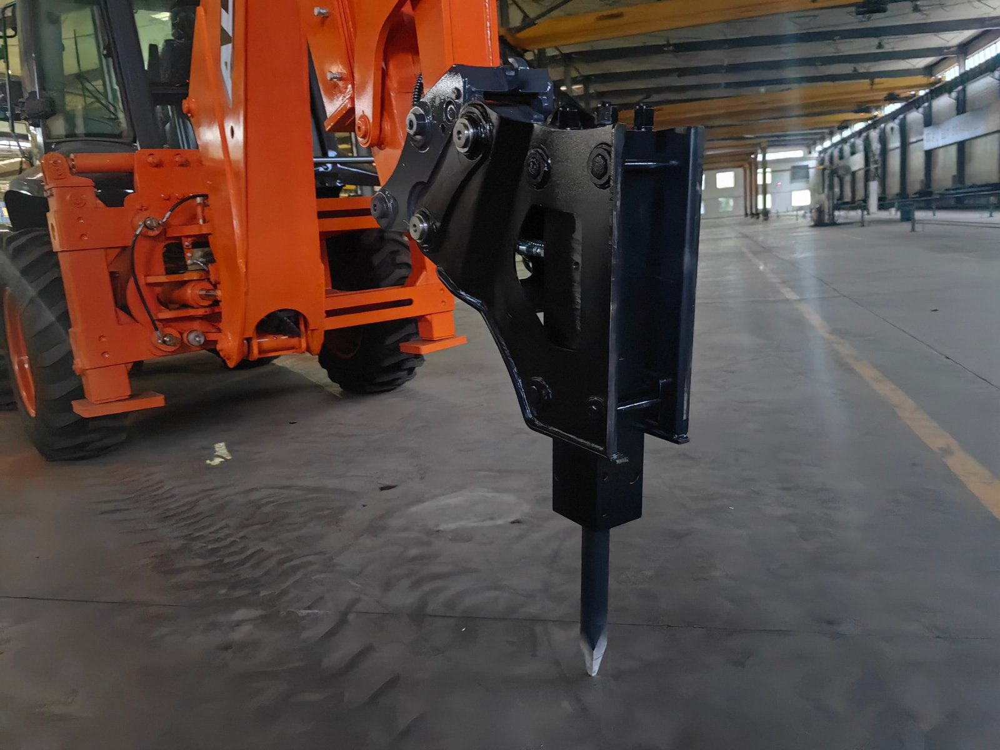

A hydraulic breaker hanging off the back of a backhoe loader in our workshop, carried on a mounting interface that comes off as one piece. This is the change the whole coupler decision is about — and why the honest answer depends on how often it has to happen, not on the price of the plate.
Start With the Order I Have to Rewrite Every Year
I work on the factory side, so my view of a quick coupler is unromantic. I do not see it as a feature on a specification sheet. I see it as a decision that arrives on my desk in one of two states: before the machine goes down the assembly line, or after it is already built — and those two states are not variations of the same job, they are different jobs with different price tags and different risks.
In the first state, adding a hydraulic quick coupler is ordinary work. The valve section is on the bench, the lines are run on an open machine where a technician can stand inside the frame, the coupler fittings go on before the loader arms are dressed, and the whole thing is pressure-tested with everything else. It is planned, it is quick, and it falls under the machine's normal warranty because it left the line that way.
In the second state — the one I get the phone calls about — an engineer has to open the main valve block, find a spare section or add one, run fresh hydraulic lines along a finished, painted, dressed machine, and install a coupler head on a bucket linkage that was already built without it. Every one of those steps costs more on a finished machine than on an open one. It also means a hydraulic circuit that our own factory did not pressure-test as a system, which is why I cannot promise it the same warranty treatment. I am not refusing the work. I am telling you what the work is.
The coupler itself is rarely the expensive part of this decision. The expensive parts are the circuit that drives it, the labour to put that circuit in the right place at the right time, and the second half of a machine's life when the attachment you specified for it either gets used or gets parked. Decide those three things at the order stage and the coupler becomes almost trivial. Decide them afterwards and you are paying twice for the same machine.
What a Quick Coupler Actually Changes
Strip away the marketing and a quick coupler does one job: it lets the operator put one attachment on the machine and take it off from the seat, without a second person, without a hammer, without pulling pins. Everything else about it — the price, the seals, the wear, the maintenance — follows from that single sentence.
There are two ways to achieve it, and they behave differently in the field:
- Mechanical quick coupler. A built-in locking mechanism with a lever or a spring-loaded handle. The operator still leaves the seat to throw the lever, but the attachment comes on and off cleanly and quickly — no pins to drive out, no lining up of two holes with a crowbar in the mud. It needs no hydraulics, nothing to service beyond keeping the mechanism clean and greased, and it is the default answer in a lot of working territories for very good reasons.
- Hydraulic quick coupler. The locking is done by hydraulic cylinder, actuated from a switch or a lever in the cab. The operator genuinely does not leave the seat. On a backhoe loader this is more than convenience: the loader end and the backhoe end are both swapping points, and an operator who can change a bucket or switch to a breaker without climbing down will actually do it — including in rain, including at the end of a shift, including when the ground is bad.
That last point is not a small one, and it is the whole reason I am writing this article rather than just quoting you a price. The value of a quick coupler is not that it saves minutes. It is that it removes the friction that makes people stop changing attachments at all. A machine with a coupler and three attachments is a far more capable machine than the same machine with three attachments and a pin-and-bush mounting nobody has the patience to use.
The Real Calculation Is Not the Coupler Price
When a buyer asks me "is the quick coupler worth it?", the question usually means "is the coupler's price worth it?" That is the wrong arithmetic, and it is wrong in a way that reliably produces the wrong decision. The coupler's price is a one-time number. What you are actually buying or refusing to buy is a change in how many minutes and how much labour every attachment change costs for the entire life of the machine.
So run this instead, with your own numbers — I am not going to invent yours, and any factory or dealer who quotes you a single "typical" recovery figure is quoting their own territory as if it were yours:
- Real swaps per week. Not what the site plan says. How often does this machine genuinely need to change ends or tools? Ask the operator, not the owner. If the honest answer is "twice a year", no coupler of any kind is justified and I will tell you so.
- Minutes per swap, before and after. Pin-and-bush removal on a dirty machine with two people, versus a coupler change from the seat. Ask your supplier for both numbers and check them against your own experience — this is a case where you should trust your operator's stopwatch more than a brochure.
- Your labour rate per hour, and whether the second person needed for a manual change has a job he is being pulled away from.
- Idle machine minutes. This is the line buyers forget, and it is often the largest. While the attachment is being changed, the machine produces nothing — and if it is the only machine on a site with a crew standing around, the cost is the crew, not the operator.
- What the alternative attachment actually earns you. A breaker that is quick to fit gets used on jobs that would otherwise be turned down. That revenue never appears in a coupler quote and never should be left out of the decision.
Multiply the minutes saved per swap by your labour rate, add the idle cost, multiply by real swaps per week, and compare that to the incremental cost of the hydraulic coupler plus its circuit. That number, not the invoice, is the coupler's price. I have watched that arithmetic come out to "obviously yes" on one site and "obviously no" on another for machines of identical size — the difference was never the machine.
The Three-Attachment Threshold
Here is the rule of thumb I give buyers, and then I will show you why it is a rule and not a slogan. If a machine is genuinely working with three or more attachments on a regular basis, a hydraulic quick coupler is the matched answer. If it works with one attachment, or with two that are changed occasionally, it is not.
The logic behind the number is not about the coupler's price. It is about where the friction sits in a two-attachment machine versus a four-attachment machine:
- One attachment, one job. A dedicated machine: an excavating bucket, or forks, or a bucket on a site that only loads. There is nothing to swap, so a coupler adds cost and a wear point for nothing. This is a legitimate specification, not a stripped-down version of a better one.
- Two attachments, switched occasionally. The second attachment is genuinely useful and genuinely rare — driven by season, or by a customer who appears twice a year. A mechanical quick coupler is the matched answer here: it delivers the real benefit (no pins, no two-man wrestle, no damaged bushes from hammering) at a fraction of the system cost, with no hydraulic service dependency. Choosing mechanical here is not settling. It is the correct answer to a smaller problem.
- Three attachments and up, in regular use. Now the operating pattern changes shape. At three tools, the operator is changing ends often enough that the changeover stops being an event and becomes part of the working day — and that is the point where the five or ten minutes a manual change still costs, multiplied by a hundred and fifty changes, stops being a rounding error. This is where a hydraulic coupler stops being a convenience and starts being a productivity device, and it is also the point where the machine's whole commercial case improves, because it can now take work it would otherwise decline.
| How the machine actually works | Matched answer | Why, in one line |
|---|---|---|
| One attachment, dedicated to one job | No coupler — pin-and-bush as built | Nothing swaps, so nothing is gained by making swapping easier |
| Two attachments, changed a few times a year | Mechanical quick coupler | Gets rid of the pins and the two-man job without adding a hydraulic system to maintain |
| Three attachments in regular rotation | Hydraulic quick coupler, ordered with the machine | Changeovers become routine, so the friction you remove is paid back every week |
| Four or more, including a breaker, auger or grapple | Hydraulic quick coupler plus the correct auxiliary circuit | The attachments themselves need hydraulic flow, so the circuit is the real decision, not the plate |
Notice what the table does not say. It does not say "basic versus advanced", or "standard versus upgraded". A one-attachment machine is not an inferior machine; it is a machine matched to one job, and specifying a coupler onto it would be the mistake. The coupler question is never "how good do you want to be" — it is "how does this machine actually spend its weeks", and the honest answer to that question is what decides it.
Why the Coupler Is a Factory Decision, Not a Dealer Add-On
Now back to the phone call I opened with. The reason a coupler ordered late is expensive is not that it is hard to bolt on. It is that a hydraulic coupler is only the visible part of a system, and the rest of that system — the circuit — is built into the machine's architecture while the machine is open. A finished machine hides all of it.
When a coupler is ordered with the machine, what actually gets built is: a valve section with the right function, lines run through the frame where a technician can reach and where they are protected, quick couplers on the attachment side, and the whole circuit pressure-tested along with the loader and backhoe systems. The coupler plate itself is the last and cheapest step.
When a coupler is requested on a finished machine, an engineer works from the outside in: opening the main valve block on a dressed machine, adding a section or finding a spare one, routing new lines along painted surfaces and around components that were never laid out to make room for them, and then installing the coupler head. The parts cost more in that configuration, the labour is several times the assembly-line equivalent, and the resulting circuit is not one the factory tested and sealed as a system — which is exactly why warranty coverage on a retrofit circuit has to be discussed case by case rather than assumed.
The same rule applies with even more force to the attachments themselves. There is a simple test I use, and I would ask any buyer to use it on their own list: does this attachment need to move oil?
- Attachments that need hydraulic flow — breakers, augers, hydraulic thumbs, shears, and anything driven by the machine's auxiliary circuit — must be planned before the machine is built, because the circuit is what has to be added, and the flow and pressure have to match the tool you intend to run.
- Attachments that need a third function — four-in-one buckets and most grabs and clamps — also belong on the pre-build list. The third function is a circuit, not an accessory.
- Purely mechanical attachments — plain buckets, forks, a ripper, a bale spike — can be added at any time. If a customer's entire plan is buckets and forks, he can buy the machine now and the attachments later without any penalty at all.
This is the distinction that turns a late phone call into an early one. Buyers who ask me "what circuits should this machine have?" before the order are not being cautious — they are the ones who end up with a machine that can take the work they did not know about yet. Those circuit decisions are the same ones I laid out in the configuration guide on this site, and if your territory's work is mixed, they are worth reading before you sign anything.
"Regular Use" Means What, Exactly?
The threshold is "three attachments in regular use", and that phrase deserves to be defined, because the most common way buyers get this wrong is by counting attachments they own rather than attachments the machine touches.
I have seen yards with six attachments and a machine that has not changed ends since delivery. Those six attachments are not in regular use; they are inventory. And an inventory of attachments behind a machine without a coupler is the worst of both worlds: the money is spent, and the capability is not being used, because the swap takes long enough that the operator plans around it instead of doing it.
So define it by behaviour, not by ownership. A machine is genuinely a multi-attachment machine when any of these is true:
- The same operator changes ends or tools most weeks — the coupler and the attachments are earning every week, and the threshold is comfortably met.
- The job requires a tool the machine cannot substitute for — a breaker on rock, an auger on fencing or footings — and that tool appears monthly or better. Hydraulic coupler with the right circuit, ordered early.
- The machine is shared across sites or crews that need different tools. This is where a coupler quietly pays best, because the alternative is not "a slower change" — it is a second machine or a subcontracted job.
- The attachment set changes with season or contract rather than weekly — a couple of changes a year, planned, with warning. Here a mechanical coupler is usually the better-matched answer, and the money you do not spend on a hydraulic system is better spent on a spare attachment that actually gets work.
I want to be careful about the tone here, because there is a version of this advice that sounds like a factory telling a customer he does not need something. That is not what I mean. If your work genuinely rotates through three or more tools, the hydraulic coupler is not a luxury — it is the difference between a machine that can only take the jobs it was delivered for and one that takes the jobs it finds. But if your machine spends its life with one bucket, the same money buys you a spare attachment, a parts kit or a set of tyres, and those will do more for your margin than a mechanism you never actuate.
The Other Side of the Threshold — When Mechanical Is the Better Answer
I argued above that a mechanical coupler is the matched answer for a two-attachment machine, and I want to make that case properly rather than as a consolation prize, because too many buyers hear "hydraulic" as the modern choice and "mechanical" as the one that came before it. That is not the shape of the decision.
A mechanical quick coupler is genuinely better in several real specifications:
- Nothing to service. No cylinders, no seals, no extra hydraulic lines to chafe, no accumulator or switch to go wrong. On a machine working in mud, dust or wet clay, every hydraulic circuit you add is one more thing that can leak, and this one simply does not exist.
- It does not depend on anybody's hydraulic repair capability. This is the part that matters most in a lot of territories, and it is the only reason I ever steer a buyer away from a hydraulic specification: if there is no local capability to diagnose and repair electro-hydraulic systems, a simpler mechanism is the more reliable commercial decision over a machine's ten-year life. That is not a compromise. That is matching the machine to the service reality around it.
- The price gap is real money. The difference between the two systems is better spent on the attachments themselves in a two-tool operation, where the second tool is the thing that actually earns.
- The pins-and-hammer problem is solved anyway. Remember what the coupler is for: removing the friction that stops people changing attachments. A mechanical coupler removes nearly all of it at a fraction of the cost. If a machine is changing between a bucket and forks four times a year, that is the whole job, done.
Where a mechanical coupler stops being the right answer is when the swap frequency rises to weekly, or when the attachment being swapped to is hydraulic — a breaker or an auger cannot be fed by a mechanism, it needs a circuit, and once the circuit exists the incremental step to a hydraulic coupler is small. That is the honest boundary between the two, and it is exactly the same boundary as the three-attachment line: frequency on one side, hydraulics on the other.
The Honest Comparison — Four Buyer Profiles
Instead of a "recommended specification", here is how I would actually answer four buyers, each of whom is right to buy a different machine. The point of the table is that the left column is a question about work, not about budget, and every row is a correct answer when the question is right.
| What the buyer tells me | What I would specify | What I would leave off, on purpose |
|---|---|---|
| "I load and dig, one bucket, one site." | Standard machine, standard bucket, no coupler | The coupler and the circuit — the money belongs in the machine's condition and tyres |
| "Bucket and forks, and the forks come out a few times a year." | Mechanical quick coupler | Hydraulic coupler, auxiliary circuit — no oil-driven tools in the plan |
| "Bucket, forks, breaker — and rock season is real." | Hydraulic coupler plus auxiliary circuit sized to the breaker, ordered with the machine | Nothing to leave off — this is the row where the full specification is the matched one |
| "Four tools, and two crews share the machine." | Hydraulic coupler, auxiliary plus third-function circuit, all attachments on a common plate standard | Nothing — but confirm the local electro-hydraulic service capability first |
If you take one thing from the table, take the third column. In three of the four rows, the correct answer includes deliberately not buying something. A specification is not a list of everything available; it is a list of what this machine's work will pay for. The full list of attachments we build and supply is on the attachments page if you want to see what the options actually are — and the reason I link it here is so you can look at that list and decide what stays off your order.
What to Tell Your Supplier Before the Order
Most of the cost of getting this wrong is avoidable with one paragraph of email. Before you place an order — before, not during production — send your supplier these five things. If they cannot answer item four, find out who can, because it is the item that decides the whole design:
- The list of attachments, in the order you expect to use them. Names are not enough — a "breaker" is a flow and pressure requirement, not a noun. If the tool is not yet chosen, say so; a supplier can size a circuit against the tool class and confirm the final match later.
- How often each one will actually be fitted. Per week, per month, per season. This is the number that decides mechanical versus hydraulic, and only you have it.
- Which attachments are hydraulic and which are purely mechanical. Oil-driven tools and third-function tools go on the pre-build list; buckets and forks do not.
- Whether you have local capability to service electro-hydraulics. Answer honestly. If the answer is no, say no — the right specification changes, and it is far better to learn that at the order stage than to discover it in year three with a machine sitting still.
- Who will be changing the attachments, and what they will be standing on. A coupler that lets one operator change from the seat is worth more on a site with one operator than on a site with three who each have a labourer. The decision follows the work, not the brochure.
If you send those five answers, a competent factory can tell you in one reply whether your machine needs a circuit, a coupler, both or neither — and that reply is free. The version of this conversation that costs money is the one that starts with "we have already built it".
Mistakes I See in Coupler Orders
These are the four I would fix if I could stand next to every buyer while he writes his order. None of them is exotic; all of them appear on actual orders.
- Buying the coupler and leaving out the circuit. A hydraulic coupler is a mechanism that needs oil. If the order lists the coupler and not the auxiliary or third-function circuit that feeds the attachments, you have bought the lock and not the key. This is the single most common way an attachment plan quietly fails.
- Sizing the circuit for the machine rather than for the tool. A circuit that exists but does not deliver the flow the breaker or auger needs is worse than no circuit — it turns an expensive tool into a tool that underperforms, and the buyer blames the tool. Give your supplier the tool, not just the intention.
- Assuming every attachment fits one plate standard. Attachment mounting standards are not universal, and a tool bought later from elsewhere may not match the plate on the machine. If you know a tool is coming from another source, settle the plate standard in writing before either is built.
- Buying attachments the machine will never swap. Six attachments and no coupler is the pattern I described earlier: capability paid for and never used. If the changeover is hard enough that the tools stay in the yard, the tools were not the answer — the machine's specification was, and it was chosen last instead of first.
There is one more category of mistake that has nothing to do with money and everything to do with expectations: assuming that a coupler makes a machine into something it is not. A coupler changes how fast a machine changes tools. It does not change what the machine is. A backhoe loader with a breaker is still a backhoe loader fitting a breaker to a backhoe loader's duty cycle, and if the plan is to break rock eight hours a day, the coupler is not the constraint — the machine class is. If you want to understand how the loader and backhoe circuits interact on this machine before you decide what to hang off them, the systems walkthrough here is the right place to start.
Frequently Asked Questions
Tell Me Your Attachment List — I'll Tell You What the Machine Needs
Send me the tools you expect to run, how often each one comes out, and whether you have local electro-hydraulic service capability. I will answer honestly, including when the answer is that you should order less than you asked for.
Ask Vivian on WhatsApp